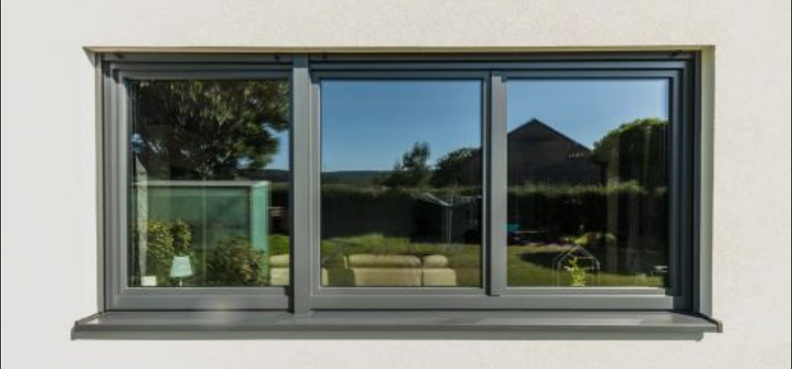

01 / FENSTER & TÜRENPassende Lösungen.
Passende Lösungen.
Sauber eingebaut.
Fenster & Türen nach Ihren Anforderungen. Wir beraten Sie bei der Auswahl und bieten passende Lösungen inklusive professioneller Montage.
Leistung anfragen ↗